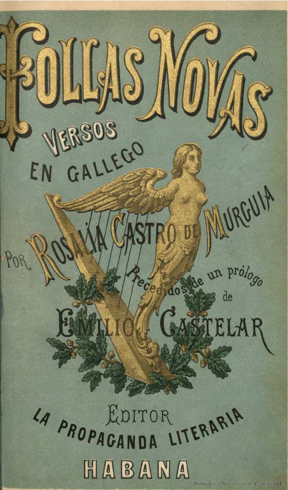

Obras
Follas Novas
Follas novas (en español, «Hojas nuevas») es un poemario publicado en 1880 por Rosalía de Castro (1837-1885). Fue escrito en la localidad vallisoletana de Simancas, donde en aquel momento residía con su marido, nombrado Director del Archivo General del Reino de España, sito en dicha localidad.
-
El libro está estructurado en cinco secciones
- Vaguedás
- Do íntimo
- Varia
- Da terra
- As viúdas dos vivos e dos mortos
La obra tiene una organización formal poco elaborada al compararla con Cantares gallegos, si bien su amplitud temática y la diversidad de sus textos le confiere mayor universalidad. La colección de poemas resulta sumamanete irregular desde una perspectiva estructural.
A pesar de ser Follas novas una obra de inaudito valor literario y humano, lo verdaderamente insólito es que Rosalía compusiese sus sentimientos y reflexiones sociales en una lengua tenida por dialectal, por flagrante ejemplo de la incultura de un pueblo.